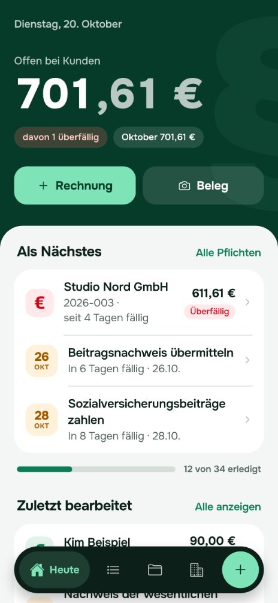
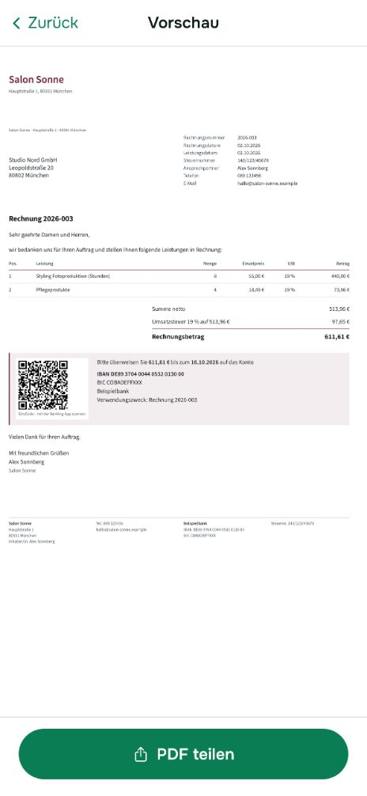
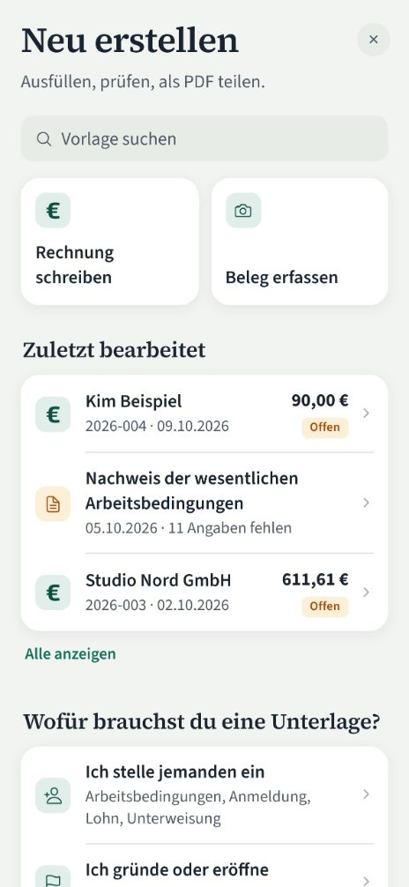
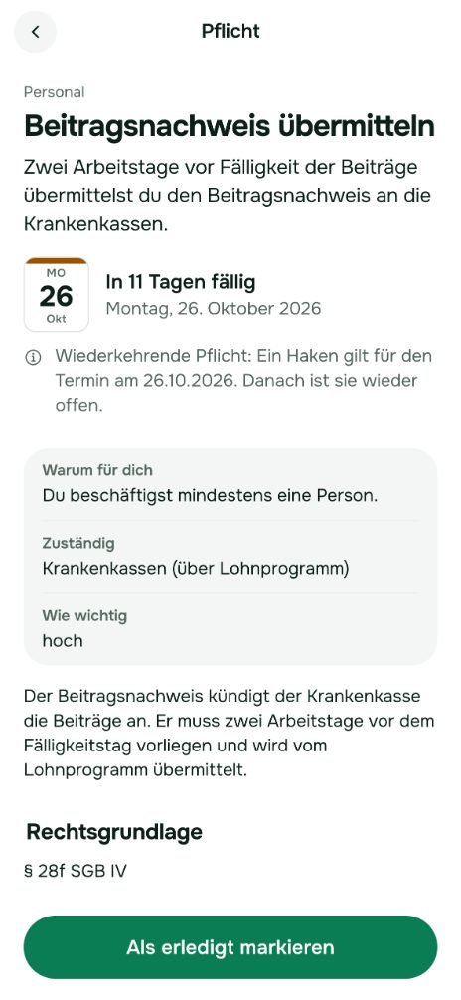
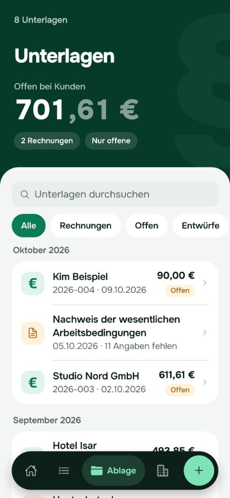
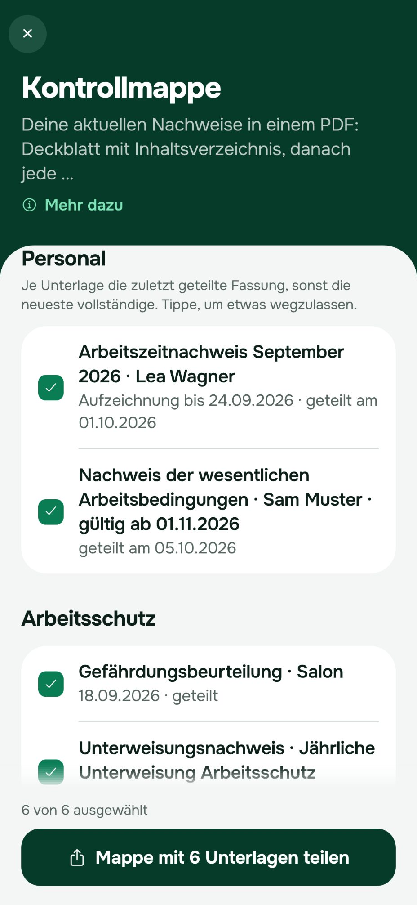

Wissen, was dein Betrieb erledigen muss – und es gleich erledigen.
{{MARKE}} zeigt dir, welche Pflichten nach deinen Angaben für deinen Betrieb in Frage kommen, wann sie dran sind und mit welcher Unterlage du sie erfüllst. Auf dem iPhone, ohne Konto.
- Wissen: Pflichten-Check kostenlos ausprobieren, fachlich geprüft – alle Pflichten mit Terminen, Erklärung und Quelle mit Pro
- Erledigen: die passende Unterlage zur Pflicht – 43 Vorlagen, Erinnerung und Kontrollmappe mit Pro
- Nebenbei: Rechnungen, E-Rechnung, Belege und Kasse mit Pro
Bald im App Storefür iPhone
Pflichten-Check kostenlos ausprobieren, alles Weitere mit Pro – mit kostenloser Testphase.Keine Rechts- oder Steuerberatung: Der Kurz-Check zeigt typische Pflichten für Betriebe wie deinen. Der Katalog ist fachlich geprüft – für deinen Einzelfall helfen Anwalt oder Steuerberatung.
So sieht {{MARKE}} aus
Echte Bildschirme aus der App, mit einem erfundenen Salon als Beispiel. Er hat mehr Angaben gemacht als der Kurz-Check oben, deshalb zeigt die App andere Zahlen.






Was {{MARKE}} für dich erledigt
Rechtsgrundlagen
Wissen, was zu tun ist – statt Pflichten zu suchen
Ein paar Fragen zu Branche, Rechtsform, Team und Kasse. {{MARKE}} zeigt auf deinem iPhone, welche Pflichten nach deinen Angaben in Frage kommen: Steuern, Personal, Arbeitsschutz, Datenschutz, Hygiene. Die Zahl der Pflichten und die ersten drei siehst du kostenlos; alle mit Terminen und eine Erinnerung drei Tage vorher gibt es mit Pro.
Art. 30 DSGVO
LMHV, IfSG
Gleich erledigen: die passende Unterlage
Hygieneplan, Hautschutzplan, Allergenliste, Gefährdungsbeurteilung, Betriebsanweisung, Unterweisung, Nachweis der Arbeitsbedingungen, Verzeichnis der Verarbeitungstätigkeiten, Datenschutzerklärung, Verfahrensdokumentation. Mit Vorschlägen für deinen Betrieb, ausgefüllt und sauber gesetzt als PDF mit Pro – im Katalog siehst du alle vorab.
Kommt eine Kontrolle, fasst die Kontrollmappe deine aktuellen Nachweise in einem PDF zusammen – je Kontrolle die passenden Nachweise aus {{MARKE}}, mit Deckblatt und Inhaltsverzeichnis Pro.
GoBD
Der Alltag gleich mit: Rechnungen, Belege, Kasse
- Rechnungen mit fortlaufender Nummer, Pflichtangaben werden vor dem Teilen geprüft Pro
- Nach dem Teilen festgeschrieben, Korrektur per Stornorechnung
- GiroCode: Die Banking-App deiner Kunden füllt die Überweisung aus
- E-Rechnung (XRechnung) für Firmenkunden Pro
- Bei überfälligen Rechnungen eine Zahlungserinnerung senden
- E-Rechnungen empfangen und Belege per Foto erfassen Pro
- Kasse und Kassenbuch mit Tagesabschluss Pro
- Umsätze, Vorsteuer und Ausgaben für Voranmeldung und EÜR, nach Soll oder Ist, per Tipp übernommen Pro
- Paket für die Steuerberatung mit Buchungsstapel im DATEV-Format Pro
ohne Konto
Deine Daten bleiben bei dir
Alles liegt verschlüsselt auf deinem iPhone. Es gibt kein Konto und keinen {{MARKE}}-Server mit deinen Kunden- oder Mitarbeiterdaten. Sicherung als verschlüsselte Datei oder automatisch in deinem iCloud Drive Pro, auf Wunsch mit Face ID gesperrt. Kein Tracking, keine eigenen Analysen – nur für Pro wertet der Dienstleister RevenueCat die Käufe für die Abo-Verwaltung aus.
Die E-Rechnung kommt für alle
Seit dem Wachstumschancengesetz gilt zwischen Unternehmen in Deutschland ein fester Fahrplan. Mit Pro erstellt {{MARKE}} XRechnungen, die den KoSIT-Validator bestehen, das offizielle Prüfwerkzeug für die XRechnung.
Alle Unternehmen müssen E-Rechnungen empfangen können.
Pflicht zum Ausstellen bei mehr als 800.000 € Vorjahresumsatz.
Pflicht zum Ausstellen für alle übrigen Unternehmen.
Quelle: Bundesministerium der Finanzen, FAQ zur E-Rechnung. Ausnahmen gelten unter anderem für Kleinunternehmer und Kleinbetragsrechnungen bis 250 €.
Kostenlos ausprobieren
Den Pflichten-Check probierst du kostenlos aus. Alles Weitere gibt es mit Pro – mit kostenloser Testphase: Rechnungen und E-Rechnung, Belege und Kasse, alle Pflichten mit Erinnerungen, das Paket für die Steuerberatung, alle Vorlagen und die Kontrollmappe. Den Preis zeigt dir zum Start der App Store.
Kostenlos
ohne Abo
- Pflichten-Check: alle Fragen, die Zahl deiner Pflichten und die ersten 3 mit Termin und Abhaken
- Vorlagen im Katalog ansehen
- Immer, auch nach dem Abo: deine Daten ansehen, Geteiltes erneut teilen und drucken, Rechnungen stornieren, Belege und Kassenbuch exportieren
- Sicherung als Datei, Wiederherstellen, Datenexport, Löschen
{{MARKE_PRO}}
monatlich oder jährlich – Preis und Testzeitraum siehst du im App Store
- Rechnungen und E-Rechnung (XRechnung)
- Belege erfassen, E-Rechnungen empfangen, Kasse und Kassenbuch
- Alle Pflichten mit Terminen und Erinnerung vor jeder Frist
- Paket für die Steuerberatung (DATEV-Format), Werte per Tipp
- Alle Vorlagen ausfüllen und als PDF (Hygieneplan, Unterweisung, Gefährdungsbeurteilung …)
- Kontrollmappe für Hygiene, Zoll, Arbeitsschutz und Kasse
- Jede Pflicht erklärt: Folgen, Rechtsgrundlage, Quellen
- Briefkopf mit Logo und Hausfarbe, automatische iCloud-Sicherung
Häufige Fragen
Ersetzt {{MARKE}} Rechts- oder Steuerberatung?
Nein. {{MARKE}} gibt allgemeine Informationen dazu, welche Pflichten nach deinen Angaben in Frage kommen, und Vorlagen für deine Unterlagen. Für Beratung im Einzelfall bleiben Anwalt, Steuerberaterin oder Steuerberater zuständig. Pflichten-Katalog und Vorlagen sind von Fachleuten geprüft (Rechtsanwalt, Steuerberater, Fachkraft für Arbeitssicherheit, Lebensmittelfachbeauftragter) – das ersetzt aber nicht die Beratung im Einzelfall.
Wo liegen meine Daten?
Nur auf deinem iPhone, verschlüsselt. {{MARKE}} hat kein Konto und keinen Server mit deinen Unterlagen. Eine Sicherung erstellst du selbst als verschlüsselte Datei oder automatisch in deinem iCloud Drive (Pro).
Für wen ist {{MARKE}} gedacht?
Für Einzelunternehmen, Salons, Cafés, Handwerksbetriebe, Freelancer und kleine GmbHs in Deutschland – alle, die keine eigene Buchhaltungsabteilung haben.
Was passiert, wenn ich mein iPhone verliere?
Deine Daten liegen nur auf dem iPhone. Hast du eine Sicherung – als verschlüsselte Datei oder automatisch in deinem iCloud Drive (Pro) –, holst du sie auf dem neuen iPhone mit deinem Passwort zurück. Ohne Sicherung sind die Daten weg, denn {{MARKE}} hat keine Kopie.
Muss ich schon E-Rechnungen schreiben?
Empfangen können musst du sie seit 2025 – das geht in {{MARKE}} mit Pro. Ausstellen müssen Unternehmen ab 2027 bei mehr als 800.000 € Vorjahresumsatz, ab 2028 alle übrigen. Ausnahmen gelten unter anderem für Kleinunternehmer und Kleinbetragsrechnungen bis 250 €. XRechnungen erstellt {{MARKE}} mit Pro.
Ist {{MARKE}} etwas für Kleinunternehmer?
Ja. Der Pflichten-Check fragt nach der Kleinunternehmerregelung. Rechnungen stellt {{MARKE}} dann ohne Umsatzsteuer und mit dem passenden Hinweis aus, Belege erfasst es ohne Vorsteuerabzug.
Was ist kostenlos?
Den Pflichten-Check probierst du kostenlos aus: Du siehst, wie viele Pflichten nach deinen Angaben in Frage kommen, und die ersten drei mit Termin. Alles Weitere gibt es mit Pro, mit kostenloser Testphase. Deine eigenen Daten bleiben immer zugänglich – auch wenn Pro endet: Geteiltes teilst und druckst du weiter, Rechnungen stornierst du, Belege und das Kassenbuch erfasster Tage siehst und exportierst du, und Sicherung, Datenexport und Löschen gehen immer.
Wie kündige ich Pro?
In den Einstellungen deines Apple-Accounts unter Abonnements, spätestens 24 Stunden vor Ende des Zeitraums. Danach bleiben deine Daten und Unterlagen, wie sie sind – ansehen, erneut teilen, stornieren und exportieren geht weiter.
Gibt es {{MARKE}} für Android oder im Browser?
Zum Start gibt es {{MARKE}} für das iPhone. Weitere Plattformen folgen.